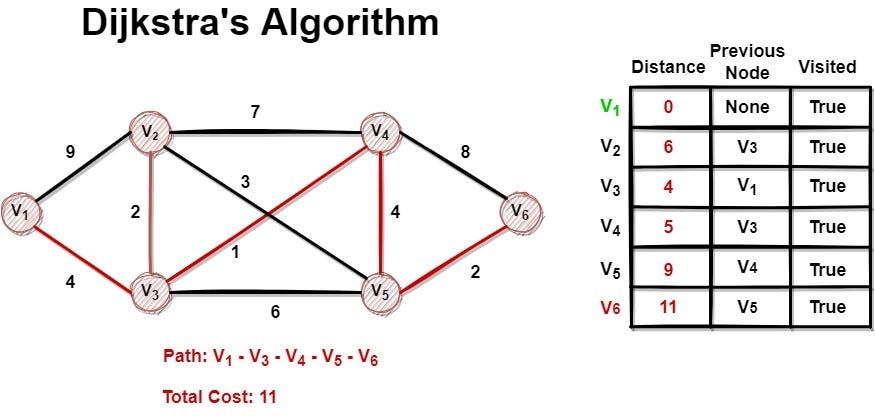

Greedy Algorithms
Dijkstra's Algorithm
Intro: Dijkstra’s algorithm finds the shortest path from a chosen node to all other nodes in a weighted graph.
Description: Dijkstra's algorithm picks the closest node to the chosen node that hasn't been visited yet. Then, it looks at the neighbors of that closest node and updates their distances if a shorter path was found. It's very similar to DFS and BFS but those don't work with weighted graphs.
History: Dijkstra's algorithm was made by computer scientist Edsger Dijkstra in 1956. He created it to show people that computers can solve complex problems, but specifically wanted to show it off on a ARMAC computer that was released in 1956. Fun fact: It took Dijkstra only 20 minutes to make his algorithm.
How to Solve:
- Initialize all of the distances
- Set source distance to 0
- Use a priority queue
- Repeatedly extract minimum node
- Relax all neighboring edges
Time Complexity: O(E log V)
Space Complexity: O(V)
Why is it Greedy? Dijkstra's algorithm is a greedy algorithm because it always selects the node that is the closese to the source.

Kruskal's Algorithm
Intro: Kruskal’s algorithm finds the Minimum Spanning Tree (MST) of a graph.
Description: It sorts edges by weight and adds them to the MST if they do not form a cycle. A MST is a subset of edges that connects all vertices in the graph with the minimum possible total edge weight
History: Kruskal's algorithm was proposed by Joseph Kruskal in 1956 as a solution to the minimum spanning tree problem.
Use Case: Used in network design such as creating the most cost-effective road, or an electrical grid.
How to Solve:
- Sort edges by weight
- Initialize disjoint set
- Add smallest edge that doesn't create a cycle
- Repeat until V-1 edges selected
Time Complexity: O(E log E)
Space Complexity: O(V)
Why is it Greedy? Kruskal's algorithm is a greedy algorithm because it always selects the smallest edge that doesn't create a cycle at each step.